اضطراب الحمل الحراري متوسط المقياس عند أعداد برانتل منخفضة جداً
الملخص
يظل الحمل الحراري المضطرب الممتد أفقياً، والذي يُسمى في النظم الطبيعية الحمل الحراري متوسط المقياس، تحدياً في التجارب والمحاكاة على السواء. وينطبق ذلك بوجه خاص على أعداد برانتل الجزيئية المنخفضة جداً كما في الحمل الحراري النجمي وفي اللب الخارجي للأرض. تعرض هذه الدراسة محاكاة عددية مباشرة ثلاثية الأبعاد لحمل رايلي-بينار الحراري المضطرب في صناديق مربعة طول ضلعها وارتفاعها وبنسبة باعية قدرها 25، وذلك لأعداد برانتل تمتد على نحو 4 رتب مقدار، ، ولأعداد رايلي ، وقد أُنجزت بحوسبة متوازية ضخمة على شبكات يصل حجمها إلى نقطة. لا يمكن بلوغ الطرف الأدنى من مجال هذا في القياسات المخبرية المضبوطة. نعرض الخصائص الأساسية للجريان واتجاهاتها مع عددي رايلي وبرانتل، ولا سيما النقل الكلي للزخم والحرارة—مع تحليل الأخير إلى مساهمتين حملية وانتشارية—عبر طبقة الحمل، والمقاطع الرأسية المتوسطة لدرجة الحرارة وتقلباتها، ومعدلات تبدد الطاقة الحركية والحرارية. كما نستكشف مدى مشابهة الاضطراب في قلب طبقة الحمل للاضطراب الكلاسيكي المتجانس والمتساوي الخواص من حيث الأطياف، وعزوم الزيادات، والشذوذ التبددي، ونجد أوجه شبه وثيقة. وأخيراً نبيّن أن مقياساً مميزاً من رتبة المقياس المتوسط يبدو أنه يتشبع عند طول موجي قدره من أجل . ونناقش بإيجاز الآثار المحتملة لهذه النتائج في تطوير بارامترات المقياس دون الشبكي للحمل الحراري المضطرب.
keywords:
حمل رايلي-بينار الحراري، عدد برانتل منخفض، الشذوذ التبددي1 مقدمة
يُعد الحمل الحراري في بواطن النجوم والكواكب وأغلفتها الجوية ظاهرة معقدة لأنه مدفوع بتآزر عوامل عدة، غير أن الباحثين كثيراً ما يدرسون نموذجاً مثالياً للحمل الحراري—هو حمل رايلي-بينار الحراري (RBC)—حيث تُسخَّن طبقة مائع محصورة بين صفيحتين أفقيتين وتُبرَّد بانتظام من الأسفل ومن الأعلى، على الترتيب (Tritton, 1977; Siggia, 1994; Kadanoff, 2001; Ahlers et al., 2009; Chillà & Schumacher, 2012). ومن المعلمات المهمة الحاكمة لـ RBC عدد برانتل ، وهو نسبة اللزوجة الحركية إلى الانتشارية الحرارية للمائع. وغالباً ما يتسم الحمل الحراري النجمي والكوكبي بأعداد برانتل صغيرة جداً؛ فعلى سبيل المثال، في الشمس (Brandenburg & Subramanian, 2005; Schumacher & Sreenivasan, 2020; Garaud, 2021) و في اللب الخارجي للأرض (Calkins et al., 2012; Aurnou et al., 2015; Guervilly et al., 2019). أما عدد رايلي ، الذي يميز شدة قوة الطفو الدافعة نسبةً إلى قوى التبدد اللزجة والحرارية، فهو معلمة تحكم أخرى ويكون كبيراً جداً في معظم الجريانات الطبيعية. وتمثل نسبة الامتدادين الأفقي والرأسي لجريان الحمل النسبة الباعية ؛ ومن السمات الحاسمة لكل الجريانات الحملية الطبيعية أن ، مما يتيح تكوّن البنى الفائقة المضطربة—وهي أنماط جريان مترابطة ذات مقياس مميز أكبر من عمق طبقة الحمل (Cattaneo et al., 2001; Rincon et al., 2005). ومن الأمثلة الممكنة التحبب الفائق على سطح الشمس (Nordlund et al., 2009; Rincon & Rieutord, 2018). وعلى الرغم من أن RBC يتضمن عدداً من التبسيطات مثل تقريب بوسينسك (Tritton, 1977; Schumacher & Sreenivasan, 2020)، فإن دراسة الجريان في طبقات ممتدة عند أعداد برانتل منخفضة تبدو ذات جدوى كبيرة. وهذا هو الهدف الأساسي من العمل الحالي. كما تحفزنا صلة الحمل ذي المنخفض بالتطبيقات الصناعية التي تستخدم الفلزات السائلة.
وعلى الرغم من هذه الأهمية، لم يُستكشف الحمل الحراري المضطرب منخفض- على نطاق واسع في التجارب، ويرجع ذلك أساساً إلى أن الفلزات السائلة مثل الزئبق والغاليوم والصوديوم صعبة المناولة ومعتمة بصرياً (Cioni et al., 1997; Zürner et al., 2019). وحتى عند تجاوز هذه الصعوبات، فإن أصغر عدد برانتل يمكن استكشافه هو للصوديوم السائل (Horanyi et al., 1999)، وهو ما يزال أكبر بنحو ثلاث رتب مقدار من نظيره في منطقة الحمل الشمسي. وتوفر المحاكاة العددية المباشرة (DNS) أدوات مهمة، لكنها هي أيضاً تعيقها متطلبات الدقة العالية بسبب الطبيعة العطالية الشديدة للحمل منخفض- (Breuer et al., 2004; Schumacher et al., 2015; Scheel & Schumacher, 2016, 2017; Pandey et al., 2018; Zwirner et al., 2020). كما أن ازدياد القدرة الحاسوبية المطلوبة مع ازدياد النسبة الباعية وفق يحد أكثر من الاستقصاءات العددية. ومع ذلك، تمكن Pandey et al. (2018) من إجراء DNS لـ RBC في مجال ببلوغ منخفضاً حتى 0.005 عند لدراسة البنى الفائقة المضطربة. وفي العمل الحالي نوسع مجال المعلمات بدرجة كبيرة مقارنةً بـ Pandey et al. (2018) وFonda et al. (2019) من خلال خفض عدد برانتل بمقدار خمسة أضعاف إضافية، مع زيادة عدد رايلي أيضاً بمرتبتين من المقدار. ويقارب أكبر عدد رينولدز تحقق في العمل الحالي ، مما يتطلب DNS متوازية ضخمة على شبكات حاسوبية تضم أكثر من نقطة.
لهذا العمل ثلاثة أهداف رئيسية: (1) تقرير اتجاهات انتقال الحرارة والزخم بالنسبة إلى عدد برانتل على مدى يقارب 4 رتب مقدار؛ (2) تقييم مدى اقتراب الخواص الإحصائية صغيرة المقياس في قلب طبقة الحمل من السلوك الكلاسيكي من نمط كولموغوروف (Kolmogorov, 1941b; Frisch, 1995). ويشمل هذا التقييم أطياف الطاقة، واختبار قانون 4/5، واستقصاء الشذوذ التبددي (Sreenivasan, 1984, 1998) في جريان حمل حراري مضطرب ذي حدود؛ (3) تحليل أنماط الدوران واسع المقياس، أي البنى الفائقة المضطربة للحمل، ولا سيما اتجاهاتها مع تناقص . وتجدر الإشارة إلى أن الجريانات الحملية في باطن الأرض والنجوم تقترن أيضاً بالدوران (التفاضلي) وبالحقول المغناطيسية، وهو ما قد يؤدي إلى انحرافات قوية عن تساوي الخواص المحلي عند المقاييس الكبيرة والمتوسطة (Aurnou et al., 2015)، لكننا سنركز هنا على تأثير عدد برانتل المنخفض. ومن ثم ستوفر سلاسل DNS هذه قاعدة بيانات فريدة لتمثيل النقل المضطرب في تشكيلات متوسطة المقياس تتميز بدرجة من الانتظام واسع المقياس، مع حل جيد لمعدلات تبدد الطاقة الحرارية والحركية.
يتضح على نحو متزايد أن كثيراً من خصائص الجريانات الحملية منخفضة- تختلف عن نظيراتها عند أعداد برانتل المتوسطة والعالية. فعلى سبيل المثال، تكون فاعلية الجريانات منخفضة- في نقل الحرارة أقل، وفاعليتها في نقل الزخم أعلى، مما هي عليه في الجريانات عالية-؛ ويزداد التباين بين الاثنين مع خفض (Scheel & Schumacher, 2017). وبسبب الانتشارية الحرارية العالية والانتشارية الزخمية المنخفضة، يُظهر الحمل منخفض- بنى حرارية أخشن، بينما تتوزع مقاييس الطول في حقل السرعة على مجال أوسع. ويؤدي ذلك إلى تعزيز الفصل بين مقاييس حقن الطاقة ومقاييس تبددها في الجريانات الحملية منخفضة- (Schumacher et al., 2015). وفي هذا النظام، لوحظ أن طيف الطاقة الحركية يقترب من تحجيم كولموغوروف الكلاسيكي (Kolmogorov, 1941b) ذي القوة في المجال العطالي (Mishra & Verma, 2010; Lohse & Xia, 2010; Bhattacharya et al., 2021). وهنا نحلل أطياف الطاقة الحركية في منطقة القلب من الجريان ونبيّن أنها تعرض بالفعل تحجيم كولموغوروف الكلاسيكي مع مجال عطالي، من دون أي نزوع نحو تحجيم بولجيانو (Bolgiano, 1959)، الذي تؤدي وفقه عملية تحويل الطاقة الحركية إلى طاقة كامنة إلى التحجيم الأشد انحداراً في المجال العطالي (Lohse & Xia, 2010; Verma et al., 2017; Verma, 2018).
يمكن توصيف البنى الفائقة المضطربة للحمل بمقياس مكاني نموذجي ومقياس زمني ؛ وتتطور المقاييس الأدق بسرعة أكبر بكثير من . ومن ثم تساعد المقاييس و في تمييز الأنماط واسعة المقياس الخشنة والمتطورة تدريجياً عن التقلبات المضطربة الأدق (والأسرع) (Pandey et al., 2018; Krug et al., 2020). وقد لوحظ أن المقاييس المميزة للبنى الفائقة تعتمد على و (Hartlep et al., 2003, 2005; von Hardenberg et al., 2008; Bailon-Cuba et al., 2010; Emran & Schumacher, 2015; Pandey et al., 2018; Stevens et al., 2018; Schneide et al., 2018; Fonda et al., 2019; Green et al., 2020; Krug et al., 2020; Pandey et al., 2021; Lenzi et al., 2021)، وكذلك على شروط الحد الحرارية عند الصفيحتين الأفقيتين العليا والسفلى (Vieweg et al., 2021a). ويزداد مقياس الطول المميز للبنى الفائقة، الذي يبلغ تقريباً ضعف عمق طبقة الحمل عند بدء الحمل، مع ازدياد (Stevens et al., 2018; Pandey et al., 2018). وهذا الاعتماد على معقد، إذ يُظهر قمة قرب ويتناقص عندما يبتعد عن هذه القيمة (Pandey et al., 2018). ويستمر اتجاه التناقص هذا في حتى ، ودونه تبدو المقاييس كأنها تستوي عند طول موجي قدره .
ينظم ما تبقى من هذه المقالة على النحو الآتي. في § 2 نصف بإيجاز DNS ونحدد فضاء المعلمات المستكشف. وفي § 3 نناقش بنى الجريان وتحجيم النقل الكلي للحرارة والزخم، وندرس في § 4 المقاطع الرأسية لدرجة الحرارة، والنقلين الحملي والانتشاري، وكذلك معدلات التبدد. وتُفحص الخواص الإحصائية للجريان، مثل أطياف الطاقة الحركية ودالة البنية من الرتبة الثالثة، في § 5 لمعرفة مدى توافقها مع صيغ كولموغوروف. ويُعرض توصيف البنى الفائقة المضطربة في § 6. ونلخص النتائج الرئيسية في § 7 ونقدم منظوراً مستقبلياً. ويتناول الملحقان A وB اختبارات محددة لكفاية الدقة. أما الملحق C فيناقش تفصيلاً تقنياً لتقديرات مقاييس الطول والسرعة للبنى الفائقة.
2 تفاصيل المحاكاة العددية المباشرة
نُجري محاكاة عددية مباشرة (DNS) لـ RBC في مجال مستطيل مغلق ذي مقطع عرضي مربع طوله ، حيث إن هو عمق طبقة الحمل. ونحل المعادلات اللابعدية الآتية التي تتضمن تقريب أوبرْبك-بوسينسك (OB):
| (1) | |||||
| (2) | |||||
| (3) |
هنا تمثل و و حقول السرعة ودرجة الحرارة والضغط، على الترتيب. ويُعرَّف عدد برانتل وعدد رايلي ، حيث إن معامل التمدد الحراري للمائع، و التسارع الناتج عن الجاذبية، و فرق درجة الحرارة المفروض بين الصفيحتين الأفقيتين. وقد استخدمنا عمق الطبقة ، وسرعة السقوط الحر ، وزمن السقوط الحر ، و بوصفها مقاييس اللابعدية للطول والسرعة والزمن ودرجة الحرارة، على الترتيب. ونستخدم شرط عدم الانزلاق على جميع الحدود. ونطبق شرط تساوي الحرارة على الصفيحتين الأفقيتين والشرط الكظوم على الجدران الجانبية. ويتيح ذلك مقارنة مباشرة مع محاكيات أخرى عند أعلى (Pandey et al., 2018; Fonda et al., 2019) ومع تجارب مخبرية مضبوطة، مثل تجارب Moller et al. (2022)، في الإعداد نفسه تماماً لتمكين تحليل متسق عبر مستوي معلمات –.
نستخدم حالَّين مختلفين في المحاكاة. فعند القيم المتوسطة والكبيرة لـ نستخدم حالَّ العناصر الطيفية Nek5000 (Fischer, 1997)، حيث يُقسَّم مجال الجريان إلى عدد منتهٍ من العناصر . وتُستخدم أيضاً كثيرات حدود الاستيفاء اللاغرانجية من الرتبة لتوسيع حقول الاضطراب داخل كل عنصر (Scheel et al., 2013)، مما يؤدي إلى مجموع قدره خلية شبكية في كامل مجال الجريان. ولما كان الحمل منخفض- تهيمن عليه القوى العطالية، فإن الجريان الناتج يكتسب بنية دقيقة متزايدة يتطلب حلها موارد حاسوبية أوسع (Schumacher et al., 2015). لذلك أجرينا تلك المحاكيات باستخدام حالّ فروق منتهية من الرتبة الثانية يتطلب ذاكرة تشغيل أقل بكثير عند حجم شبكة معطى. وهنا يُقسَّم مجال الجريان إلى خلية شبكية غير منتظمة (Krasnov et al., 2011; Liu et al., 2018). وقد تحققنا من أن النتائج المستحصلة من كلا الحالّين تتفق جيداً فيما بينها بإجراء محاكاتين لـ و باستخدام الحالّين كليهما. ونحيل إلى الملحق A من أجل مقارنة مباشرة لتدفقات الحرارة الحملية المتوسطة كلياً والمتوسطة أفقياً ومعدلات التبدد من الحالّين. وتُعرض المعلمات المهمة لكل المحاكيات في الجدول 1.
| No. of mesh cells | ||||||||
| 0.001 | 59 | 3.12 | 25 | |||||
| 0.005† | 3.1 | 3.13 | 22 | |||||
| 0.021† | 0.81 | 3.57 | 26 | |||||
| 0.7† | 0.17 | 4.14 | 59 | |||||
| 7.0† | 0.17 | 6.14 | 214 | |||||
| 0.001 | 131 | 3.12 | 19 | |||||
| 0.005 | 34 | 3.57 | 24 | |||||
| 0.021 | 34 | 4.17 | 32 | |||||
| 0.7† | 0.81 | 4.90 | 67 | |||||
| 7.0†† | 0.81 | 6.14 | 187 | |||||
| 0.001 | 537 | 3.57 | 25 | |||||
| 0.7† | 3.1 | 6.3 | 72 | |||||
| 7.0†† | 1.8 | 6.2 | 138 |
3 مورفولوجيا الجريان والنقل الكلي
3.1 بنى حقلي السرعة ودرجة الحرارة
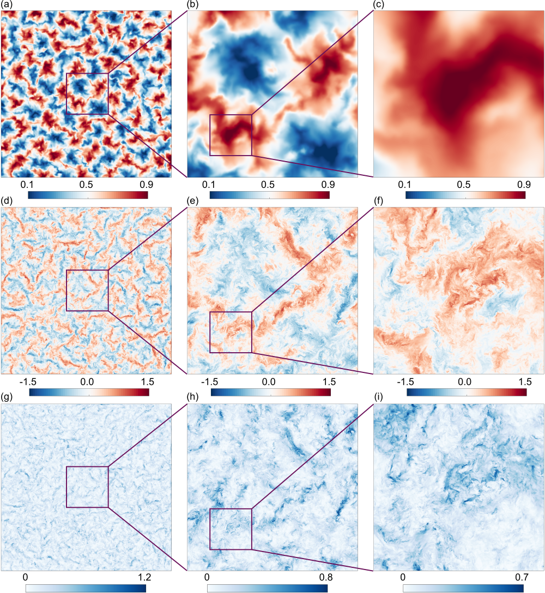
لأن المقاييس الزمنية لعمليات انتشار الحرارة والزخم تختلف كثيراً في الحمل منخفض-، يُظهر حقل درجة الحرارة بنى أخشن من حقل السرعة. ويوضح الشكل 1 ذلك، إذ يعرض حقول درجة الحرارة اللحظية، والسرعة الرأسية، والطاقة الحركية المضطربة الموضعية في المستوى الأفقي الأوسط، ، لأكبر المحاكيات عند . وتعرض اللوحات اليسرى الحقول في كامل المقطع العرضي، بينما تبين اللوحات الوسطى واليمنى التكبيرات المحددة لإبراز البنى صغيرة المقياس. وتُظهر أنماط جريان حقلي درجة الحرارة والسرعة الرأسية أوجه تشابه عند المقاييس الكبيرة، غير أن حقل السرعة يضم أيضاً بنى دقيقة جداً مقارنةً بحقل درجة الحرارة العالي الانتشار. ويُقدَّر أدق مقياس لحقل السرعة المضطرب، المشار إليه بمقياس كولموغوروف ، وفق . وهنا يمثل المتوسط الحجمي-الزمني المشترك لحقل معدل تبدد الطاقة الحركية لكل وحدة كتلة، محسوباً عند كل نقطة وفق
| (4) |
حيث تمثل مركبة السرعة في اتجاه الإحداثي . أما أدق مقياس لحقل درجة الحرارة فهو إما مقياس كورسن ، الذي يحدد نهاية المجال العطالي-الحملي عندما ، أو مقياس باتشلور ، الذي يحدد نهاية المجال اللزج-الحملي عندما ؛ انظر مثلاً Sreenivasan & Schumacher (2010). ومن الواضح أن عندما ، وأن عندما . ومن ثم فإن أدق المقاييس في الجريان المدروس هي إما عند أو عند .
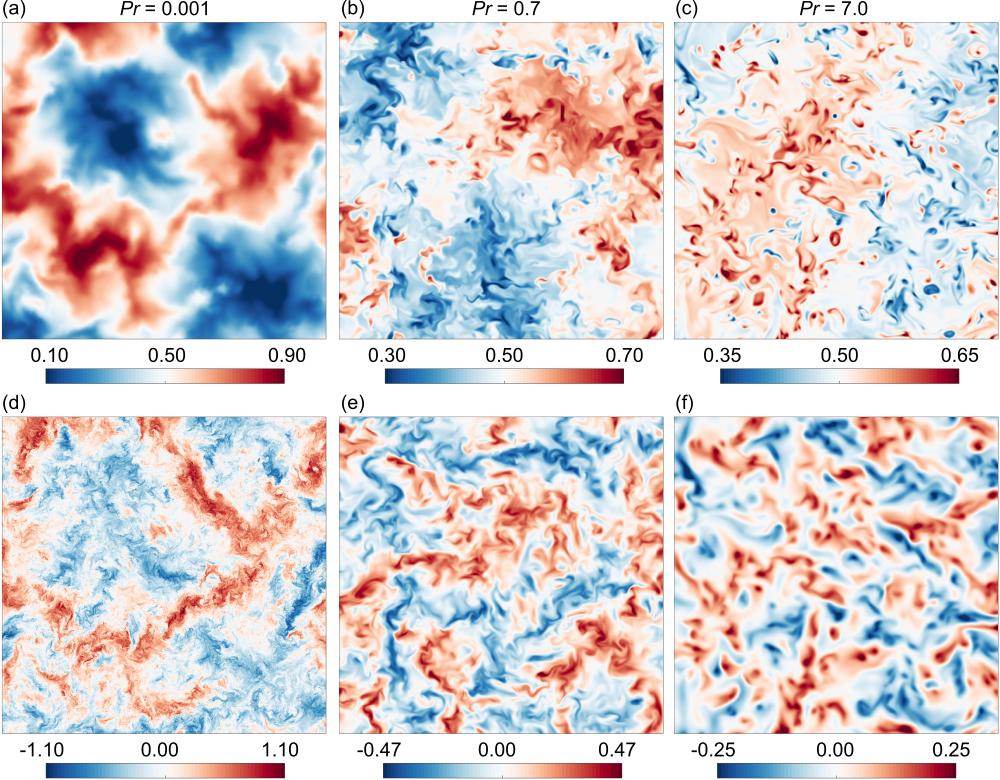
يبلغ مقياس كورسن تقريباً 178 ضعف مقياس كولموغوروف عند . ويتضح هذا الفرق الكبير في الشكلين 1(c,f)، حيث تُعرض حقلا درجة الحرارة والسرعة الرأسية في مقطع عرضي صغير حجمه . وتكشف الأشكال أن أصغر مقياس طول للبنى الحرارية—أي مقياس الطول الذي يكون تغير درجة الحرارة عليه ذا شأن—هو من رتبة ، في حين أن نظيره لبنى السرعة أدق بكثير. ونجد أيضاً أن البنى السائدة في حقل الطاقة الحركية تشبه تلك الموجودة في السرعة الرأسية بسبب هيمنتها في المستوى الأوسط (Pandey et al., 2018). وهذا المجال الواسع من مقاييس الطول الحاضرة في الحمل منخفض- يولد مجالاً عطالياً عريضاً في طيف الطاقة الحركية، وهو ما سنناقشه في § 5.2.
ولرؤية آثار في بنى الجريان، نعرض حقلي درجة الحرارة والسرعة الرأسية من أجل و و عند في الشكل 2. ولإبراز البنى الصغيرة، تُعرض الحقول في ربع المقطع العرضي الكامل (في البعد الخطي). ومع ازدياد تتولد بنى حرارية أدق فأدق بسبب تناقص الانتشارية الحرارية. ومن ناحية أخرى، يصبح تغير السرعة أكثر انتظاماً تدريجياً مع ازدياد اللزوجة (أو تناقص عدد رينولدز) مع ازدياد .
3.2 قوانين نقل الحرارة والزخم
يختلف الحمل عند أعداد برانتل المنخفضة عن نظيره عالي- بانخفاض نقل الحرارة وتعزز نقل الزخم (Schumacher et al., 2015; Scheel & Schumacher, 2016, 2017; Pandey et al., 2018; Zürner et al., 2019; Zwirner et al., 2020). ويُقاس نقل الحرارة بعدد نوسلت ، المعرّف كنسبة النقل الحراري الكلي إلى النقل بالتوصيل وحده. ويُحسب وفق
| (5) |
حيث يرمز مرة أخرى إلى المتوسط على كامل مجال المحاكاة والزمن. نحسب لكل المحاكيات ونرسمها، عند ثابت، بدلالة في الشكل 3(a): يزداد حتى ، لكنه لا يتغير كثيراً بعد ذلك. وقد أُبلغ عن اتجاه مماثل في الأدبيات للحمل في مجالات (Verzicco & Camussi, 1999; Schmalzl et al., 2004; van der Poel et al., 2013) وكذلك من أجل (Pandey & Sreenivasan, 2021). ويشير الشكل 3(a) إلى أن الانتشار الجزيئي يصبح نمطاً متزايد الهيمنة في نقل الحرارة مع تناقص . ومن أجل و، نجري أفضل ملاءمات للبيانات عند . وتُعطى قوانين النقل لكلا عددي رايلي، مع أشرطة الخطأ، في الجدول 2. وباختصار، نجد أن عدد نوسلت متسق مع قانون القوة عند و عند . وتقع أسس قوانين القوة هذه في مجال الحمل الممتد ضمن النطاق الملحوظ في RBC عند ، كما هو مبين في Pandey & Sreenivasan (2021)، حيث توجد مناقشة أوسع لأس تحجيم .
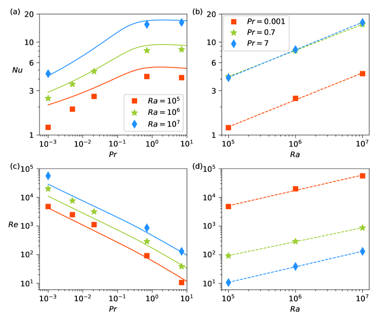
تزداد القيم المطَبَّعة للنقل الحراري الكلي في RBC مع ازدياد الدفع الحراري، ويعتمد معدل الزيادة على عدد برانتل (Scheel & Schumacher, 2016, 2017). نرسم من أجل و7 مقابل في الشكل 3(b)، الذي يبين أن من أجل و7 متشابهتان تقريباً. ولا توجد سوى ثلاث نقاط بيانات، وهو ما لا يكفي لإثبات نتيجة جديدة. ومع ذلك، فإن ملاءمات قانون القوة لهذه النقاط الثلاث تعمل على استكمال النتائج القائمة. ونحصل تقريباً على (انظر الجدول 2). إن الأسس الخاصة بأعداد برانتل الثلاثة متشابهة أساساً وتتفق مع تلك الملحوظة في الحمل من أجل (Bailon-Cuba et al., 2010; Stevens et al., 2011; Scheel et al., 2012; Scheel & Schumacher, 2014, 2016). ومن اللافت أن الأس عند ليس أصغر مقارنةً بنظيره عند . وقد أُبلغ عن أس تحجيم أقل قليلاً، قدره ، من محاكيات في أسطوانات مغلقة عند (Scheel & Schumacher, 2017) و. وأبلغت تجارب حديثة في الحمل الحراري الفلزي السائل شديد الاضطراب أجراها Schindler et al. (2022)، عند عدد برانتل يقارب القيمة نفسها ولكن لأعداد رايلي تصل إلى ، في أسطوانة ذات ، عن أس تحجيم أصغر حتى، قدره 0.124. ومن الممكن أن يؤثر الجريان واسع المقياس المقيد في الأسطوانة المغلقة في أس التحجيم عند أعداد رايلي المنخفضة والمتوسطة؛ انظر مناقشة Pandey & Sreenivasan (2021).
يقيس عدد رينولدز نقل الزخم في RBC. ونحسبه باستخدام و بوصفهما مقياسي الطول والسرعة الملائمين، وفق
| (6) |
حيث تمثل السرعة الجذرية المتوسطة التربيعية (rms). ويُرسم عدد رينولدز بدلالة في الشكل 3(c)، الذي يكشف أن الجريان، عند ثابت، يفقد فاعليته في نقل الزخم مع ازدياد (Käpylä, 2021). وفي الحمل الحراري يعتمد أس قانون القوة لتحجيم على مجال ؛ ويتناقص عدد رينولدز مع ازدياد حتى عندما تهيمن العطالة على الجريان. ويمكن العثور على ملاءمات قانون القوة المفصلة في الجدول 2. وباختصار نحصل على و من أجل و، على الترتيب. وكما في حالة عدد نوسلت، تتفق أسس تحجيم مع تلك المرصودة عند (Verzicco & Camussi, 1999; Pandey & Sreenivasan, 2021).
يُظهر تغير عدد رينولدز مع ، المرسوم في الشكل 3(d)، أن أعلى باستمرار عند أعداد برانتل الأدنى، ويتجلى ذلك في زيادة معاملات ملاءمات قانون القوة الملخصة في الجدول 2. وتنتج أفضل الملاءمات و و من أجل و7، على الترتيب. ولاحظ أن عدد رينولدز المبني على سرعة السقوط الحر يتدرج وفق . ومن ثم توحي أسس التحجيم هذه بأن سرعة السقوط الحر عند ثابت لا تعتمد بقوة على (انظر الجدول 1). وتقع أسس التحجيم في النطاق نفسه كما في دراسات سابقة عدة؛ غير أن الأس لا يتناقص مع تناقص عدد برانتل كما وجد Scheel & Schumacher (2017). وقد يكون ذلك نتيجة اختلافات في النسبة الباعية، لكننا نكرر أن الملاءمات الحالية تستخدم 3 نقاط بيانات فقط.
بُذلت محاولات للتنبؤ بعمليات النقل الكلية في RBC بدلالة معلمات التحكم (Shraiman & Siggia, 1990; Grossmann & Lohse, 2000; Pandey & Verma, 2016). وافترض Grossmann & Lohse (2000) وجود دوران واسع المقياس من رتبة حجم خلية الحمل، واقترح مجموعة من المعادلات المقترنة التي تربط و بوصفهما دالتين في و (Grossmann & Lohse, 2001). وتشمل المعادلات أيضاً مجموعة من المعاملات الثابتة التي تعتمد قيمها على النسبة الباعية للمجال. وباستخدام المعاملات التي وفرها Stevens et al. (2013) من أجل RBC، نحسب بدلالة من نموذج غروسمن-لوهزه ونعرضها كمنحنيات صلبة في الشكل 3(a). وتكون أعداد نوسلت المقدرة بهذه الطريقة أعلى بعض الشيء من تلك المحسوبة من DNS عند . وعند طرف المنخفض، قد يُعزى ذلك إلى أن حقول درجة الحرارة لهذين الزوجين من المعلمات تهيمن عليها الانتشارية وبالكاد تختلط في القلب. إلا أن الاتفاق أفضل عند ، مما يشير إلى أن نقل الحرارة في خليتنا الممتدة لا يختلف كثيراً عنه في خلايا . كما نرسم من نموذج غروسمن-لوهزه في الشكل 3(c)، ونجد اتفاقاً مقبولاً؛ انظر أيضاً Verma (2018).
| 0.001 | |||
| 0.7 | |||
| 7 |
4 المقاطع الرأسية عبر طبقة الحمل
4.1 حقول درجة الحرارة وتدفق الحرارة
في حالة الاتزان التوصيلي يكون تدرج درجة الحرارة الرأسي ثابتاً؛ أما في الحالة الحملية فتنشأ لا تجانسات في الاتجاهات الأفقية، مما يؤدي إلى تعديل المقطع الخطي لدرجة الحرارة. نحسب مقطع درجة الحرارة المتوسط ونرسمه في الشكل 4. وهنا يشير إلى المتوسط على كامل المقطع العرضي الأفقي لـ عند ارتفاع ثابت وعلى الفترة الزمنية الكاملة. وفي جريان حملي مضطرب، يحدث تقريباً كامل هبوط درجة الحرارة داخل الطبقات الحدية الحرارية (BLs) على الصفيحتين الأفقيتين، بينما يبقى قلب الجريان خارج هذه الطبقات الحدية شبه متساوي الحرارة (ومن ثم مختلطاً جيداً). ويعرض الشكل 4(a) هذه السمة. غير أن ميل مقطع درجة الحرارة في المستوى الأوسط يزداد مع تناقص . ونرسم المقاطع من أجل لكل أعداد رايلي في الشكل 4(b). ولا ينحرف المقطع عند إلا انحرافاً ضعيفاً عن مقطع التوصيل الخطي رغم ارتفاع عدد رينولدز للجريان. ويتناقص تدرج درجة الحرارة في المستوى المركزي مع ازدياد ، وحتى عدد رايلي قدره لا يكفي لتوليد حقل درجة حرارة مختلط جيداً في منطقة القلب عند هذا المنخفض جداً.
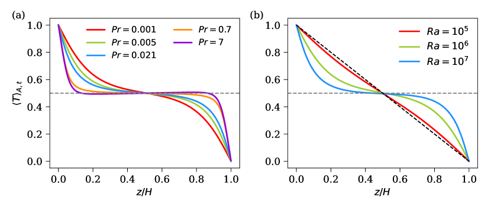
في حمل OB، يكون متوسط درجة الحرارة على كامل مجال الجريان ، لكنها تتقلب عند كل نقطة في الجريان. ونحلل حقل درجة الحرارة إلى متوسطه وتقلبه وفق
| (7) |
وعلى الرغم من أن حقل درجة الحرارة يصبح أكثر انتشارية مع تناقص ، فإن التقلبات تزداد مع تناقص ؛ انظر الشكل 5(a) من أجل . ويُلتقط تغير العمق من خلال تقلب درجة الحرارة المستوي المحسوب وفق
| (8) |
يبين الشكل 5(a) أن ينعدم عند الصفيحة بسبب شرط الحد متساوي الحرارة المفروض.
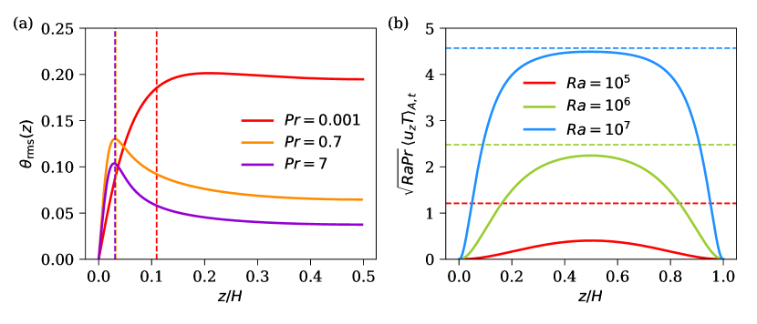
ومع ازدياد المسافة عن الصفيحة السفلى، تزداد قوة التقلبات داخل منطقة الطبقة الحدية الحرارية. وتقع القيم العظمى في مقاطع قرب حافة الطبقة الحدية الحرارية (المحسوبة وفق ) والمعلَّمة بخطوط رأسية متقطعة في الشكل 5(a). ويشير ذلك إلى أن الأعمدة الحرارية تحتفظ بدرجة حرارتها، في حين تنخفض (ترتفع) درجة حرارة المائع المحيط مع ازدياد المسافة عن الصفيحة السفلى (العليا). ويؤدي ذلك إلى تباين متزايد بين مكوني الجريان، وينعكس في ازدياد داخل منطقة الطبقة الحدية (Pandey, 2021). أما في منطقة القلب، فإن يتناقص مع المسافة عن الصفيحة لأن الأعمدة لا تحتفظ بهويتها وتبدأ بالاختلاط مع مائع القلب.
يحدث نقل الحرارة بفعل العمليات الحملية والانتشارية معاً، وتتغير نسبتهما مع العمق. وللحصول على التدفق الحراري الكلي في مستوى أفقي، نأخذ متوسط معادلة درجة الحرارة (2) في الاتجاهات الأفقية وفي الزمن، مما يؤدي إلى
| (9) |
يتضح من مقاطع درجة الحرارة في الشكل 4 أن المساهمة الانتشارية ينبغي أن تكون صغيرة في منطقة القلب المختلطة جيداً—وتزداد باتجاه الصفائح لتبلغ قيمتها العظمى عندها. ويؤكد تغير تدفق الحرارة الحملي مع العمق في الشكل 5(b) من أجل هذا التوقع. وتُبيَّن مقادير التدفق الحراري المتوسط كلياً بخطوط أفقية متقطعة في الشكل 5(b)، موضحةً أن التدفق الانتشاري (أي المسافة بين المنحنيات الصلبة والخطوط الأفقية المتقطعة المقابلة) ليس مهملاً حتى في المنطقة المركزية عند . وتهيمن المركبة الانتشارية على التدفق الحراري الكلي في المنطقة المركزية عند ، وهو ما يتسق مع عدم كفاءة نقل الحرارة الحملي؛ انظر الجدول 1. أما عند ، فتضمحل المساهمة الانتشارية في المستوى المركزي. ومن ثم، كلما أصبح أصغر، احتاج المرء إلى أكبر قبل أن تغدو العمليات المضطربة مهمة.
4.2 معدلات تبدد الطاقة الحرارية والحركية
بينما تتغير درجة الحرارة المتوسطة بحدة قرب الصفيحتين الأفقيتين وبضعف في المنطقة المركزية، فإن المقطع الرأسي المتوسط لحقل معدل التبدد الحراري، وهو معدل فقدان التباين الحراري المحسوب نقطياً وفق
| (10) |
يكون أعلى في جوار الصفيحتين الأفقيتين ويتناقص باتجاه المركز (Scheel & Schumacher, 2016).
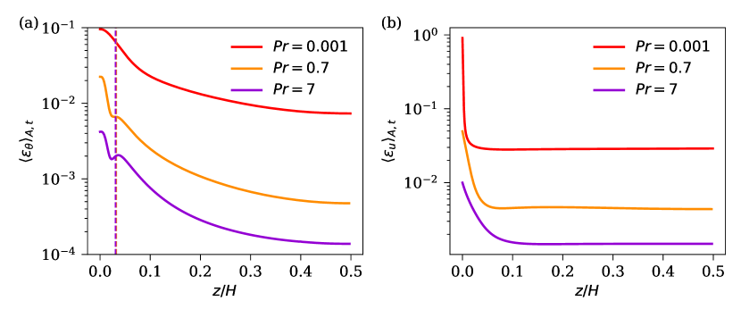
نحسب أيضاً حقل معدل التبدد الحراري المعرّف وفق
| (11) |
لقياس التغير المكاني لتقلبات درجة الحرارة. ويُرسم المقطع المتوسط لمعدل التبدد الحراري في الشكل 6(a) من أجل . لاحظ أن المقاطع الرأسية المتوسطة لكل من و ترتبط بالعلاقة
| (12) |
حيث إن هو معدل التبدد الموافق لمقطع درجة الحرارة المتوسط (Emran & Schumacher, 2008). وفي الجريانات الحملية ذات الطبقات الحدية الحرارية المتطورة جيداً، يسهم أساساً في الطبقات الحدية وبصورة مهملة في القلب. ويظهر هذا الانخفاض السريع لـ خارج منطقة الطبقة الحدية الحرارية على هيئة انعطاف ضحل في مقاطع . وفي الشكل 6(a)، نشير إلى سماكات الطبقة الحدية الحرارية عند و بخطوط رأسية متقطعة، ونلاحظ أن الانعطافات تُرصد قرب حافة الطبقة الحدية الحرارية. ولا يظهر الانعطاف عند بسبب غياب طبقات حدية حرارية متطورة جيداً.
نجد أن يزداد مع تناقص . ويرجع ذلك إلى أن معدل التبدد الحراري المتوسط حجماً يرتبط بالنقل الحراري الكلي (Shraiman & Siggia, 1990) وفق
| (13) |
وبما أننا نلاحظ ، فإن ذلك يؤدي إلى عند ثابت. ومن ثم فإن تناقص معدل التبدد الحراري مع ازدياد متسق مع اعتماد عدد نوسلت على .
نرسم الآن في الشكل 6(b) مقاطع معدل التبدد اللزج المعرّف في (4). وعلى غرار ، توجد أكبر قيم قرب الصفيحة الأفقية بسبب التغير القوي في حقل السرعة في جوار الصفائح. كذلك فإن تغير مقاطع في منطقة القلب يكاد يكون مهملاً مقارنةً بتغيرها في منطقة الطبقة الحدية اللزجة قرب الصفائح. ويبين الشكل 6(b) أن يزداد مع تناقص لكل . لاحظ أن معدل التبدد اللزج المتوسط كلياً يرتبط بعدد نوسلت وفق
| (14) |
ولذلك ينبغي أن يتناقص مع ازدياد .
5 توصيف الاضطراب في القلب
5.1 تساوي الخواص في المستوى الأوسط
استخدم Vorobev et al. (2005) النسب
| (15) |
لتحديد درجة اللاتساوي الخواصي على مستوى عزوم المشتقات من الرتبة الثانية. فالجريانات التي لا يوجد فيها تغير في الاتجاه الرأسي تعطي (ومن ثم تكون لا متساوية الخواص)، بينما للجريانات المتساوية الخواص تماماً. ويُلخص المعامل ، الذي يربط المشتقة داخل المستوى بمشتقة عرضية بالنسبة إلى الاتجاه الرأسي، في ثلاثة مستويات أفقية في الجدول 3. ويبقى قريباً من الواحد في منطقة القلب عند ، لكن توجد انحرافات مهمة قرب الصفائح الأفقية. وتظهر سعات مشابهة لتركيبات أخرى؛ انظر أيضاً Nath et al. (2016). ومن ثم نستنتج أن ثمة أساساً معقولاً لاستكشاف أوجه التشابه مع اضطراب كولموغوروف في منطقة القلب؛ انظر Mishra & Verma (2010) و Verma et al. (2017).
| 0.5 | 0.971 | 0.980 | 0.957 | 0.953 | 0.963 |
|---|---|---|---|---|---|
| 0.1 | 1.132 | 1.008 | 1.018 | 1.056 | 1.173 |
| 0.01 | 11.35 | 3.225 | 1.657 | 7.108 | 12.51 |
5.2 أطياف الطاقة الحركية
في الجريانات المضطربة ثلاثية الأبعاد، تتدفق الطاقة الحركية المحقونة عند مقاييس الطول الكبيرة نحو المقاييس الأصغر، ثم تتبدد في النهاية عند أصغر المقاييس بفعل التأثير اللزج.11 1 لن نبحث هنا الصلة بحدسية أونساغر القائلة إنها قد ترتبط بتفردات في الحلول الضعيفة لمعادلات أويلر. وفي المجال العطالي—وهو مجال مقاييس الطول البعيد عن مقياسي الحقن والتبدد كليهما—يتبع طيف الطاقة الحركية ، الذي يعطي تكامله على جميع أعداد الموجة الطاقة الحركية، تحجيم كولموغوروف القياسي
| (16) |
حيث إن ثابت كولموغوروف و يشير إلى معدل تبدد الطاقة الحركية المتوسط حجماً وزمناً.
ولأغراضنا، سيكون من المفيد دراسة سلوك طيف الطاقة ثنائي الأبعاد (2D) في مستوى أفقي. ويُعرَّف تحويل فورييه 2D لحقل في مستوى أفقي عند وفق
| (17) |
حيث إن هو نمط فورييه الموافق لمتجه الموجة . ومن ثم يرمز إلى أنماط فورييه لحقل السرعة في المستوى الأوسط بـ . وتساوي الطاقة الحركية في مستوى أفقي مجموع طاقات كل نمط فورييه، أي
| (18) |
مع
| (19) |
وباستخدام تساوي الخواص الأفقي للحقول، يمكن تكامل العبارة داخل الأقواس المربعة مباشرة للحصول على ، حيث إن هي الطاقة الحركية المتوسطة لجميع أنماط فورييه الواقعة في منطقة حلقية بين نصفي القطر و. ومن ثم تصبح الطاقة الحركية المستوية المتوسطة
| (20) |
حيث إن هو طيف الطاقة الحركية أحادي البعد (1D) في مستوى أفقي (Peltier et al., 1996).
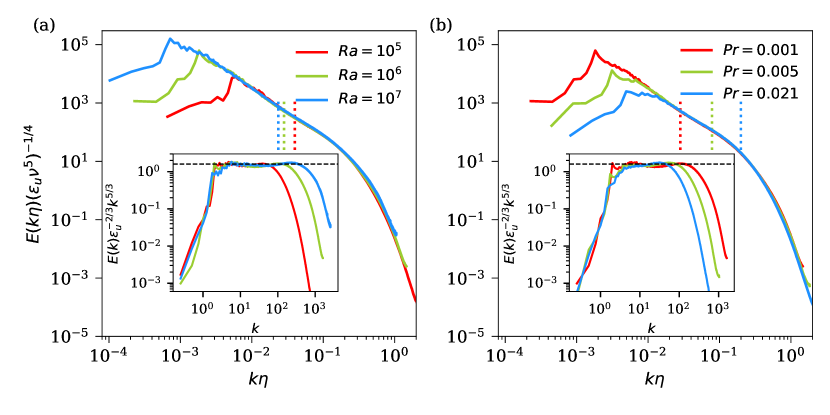
نحسب طيف الطاقة في المستوى الأوسط للجريانات منخفضة- لكل لقطة لحظية، ثم نأخذ متوسط الأطياف اللحظية على جميع اللقطات المتاحة للحصول على طيف الطاقة الحركية المتوسط. وينبغي أن تتطابق أطياف الطاقة للجريانات ذات الكونية صغيرة المقياس عند أعداد رينولدز مختلفة، إذا كانت أعداد رينولدز عالية بما يكفي، عند رسمها مقابل . وعندئذ تُقرأ المعادلة (16) بدلالة عدد الموجة المطَبَّع على النحو الآتي (Monin & Yaglom, 2007):
| (21) |
نرسم الآن أطياف الطاقة المطَبَّعة بدلالة في الشكل 7. وتُعرض الأطياف عند في الشكل 7(a) لكل أعداد رايلي الثلاثة، في حين تُعرض الأطياف عند ثابت و و0.021 في الشكل 7(b). ويكون التطابق ممتازاً بعد عدد الموجة الموافق لقيمة العظمى. ونعرض الأطياف نفسها بالصيغة المطَبَّعة في اللوحات الداخلية للشكل 7، مما يؤكد أنها تتطابق فيما بينها لكل الجريانات منخفضة- في مجال أعداد موجية منخفضة إلى متوسطة الكبر. وتتسع الهضبة في مجال عدد الموجة اللابعدي مع ازدياد . وتبين اللوحة الداخلية في الشكل 7(a) أن المجال العطالي يمكن تقديره بأنه و و من أجل و، على الترتيب. ويزداد المجال العطالي مع ازدياد وتناقص ، كما هو متوقع من أعداد رينولدز المتزايدة.
وتُعرض أطياف الطاقة المطَبَّعة بالطريقة نفسها من أجل و عند ثابت في اللوحة الداخلية للشكل 7(b). ومرة أخرى تتطابق الأطياف المطَبَّعة تطابقاً جيداً. ويمكن كشف هضبة عند القيمتين الأدنيين من ، مع مجال عطالي يقابل و من أجل و، على الترتيب. وتقابل الهضبة في جميع الحالات ، بما يتسق مع القيمة التجريبية والعددية في الاضطراب المتساوي الخواص (Sreenivasan, 1995; Yeung & Zhou, 1997; Ishihara et al., 2009).
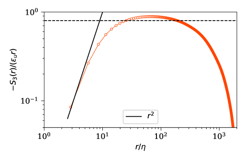
5.3 دالة البنية من الرتبة الثالثة
لاستكشاف ما إذا كانت تقلبات السرعة في قلب الحمل منخفض- قريبة من اضطراب كولموغوروف، نحسب دالة البنية الطولية من الرتبة الثالثة المعرّفة وفق
| (22) |
حيث يشير إلى متوسطة مناسبة، وتكون زيادة السرعة الطولية هي
| (23) |
مع . وقد بين Kolmogorov (1941a) أن في جريان مضطرب متجانس ومتساوي الخواص عالي- هو دالة كونية للفاصل ويتغير وفق
| (24) |
في المجال العطالي؛ وهنا، وفي بقية العمل، . وتُظهر دوال البنية الطولية في اتجاهي و في المستوى الأوسط لأعلى جريان لدينا من حيث أنها متقاربة جداً عند الزيادات الصغيرة والمتوسطة، لذلك نأخذ المتوسط في الاتجاهين. ونعرض في الشكل 8 دالة البنية من الرتبة الثالثة المتوسطة بالصيغة المطَبَّعة بدلالة . ويبين الشكل أن دالة البنية المعوَّضة تميل إلى التحجيم بالصيغة التحليلية في بداية المجال اللزج عند . كما يبين أن دالة البنية المطَبَّعة تُظهر هضبة ضمن مجال متوسط من مقاييس الطول، مما يعني أن يتغير فعلاً تقريباً وفق في المجال العطالي، لكن القيمة العددية أكبر قليلاً من (Kolmogorov, 1941a). وأحد الأسباب الممكنة لهذا الانحراف هو مساهمة الطفو المتبقية (Yakhot, 1992).
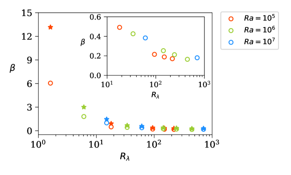
5.4 الشذوذ التبددي
ينص القانون الصفري للاضطراب (أو «الشذوذ التبددي») على أن معدل تبدد الطاقة الحركية المتوسط، عندما يُقاس بسرعة واسعة المقياس مثل السرعة الجذرية المتوسطة التربيعية وبطول كبير، يصبح ثابتاً عند أعداد رينولدز عالية بما يكفي (Eyink, 1994; Frisch, 1995; David & Galtier, 2021). ويعرض الشكل 9 معدل تبدد الطاقة المعاد تحجيمه
| (25) |
حيث إن إما ارتفاع طبقة الحمل أو المقياس التكاملي المحسوب من طيف الطاقة (20) في § 5.2 وفق
| (26) |
لاحظ أن يؤخذ أيضاً بالنسبة إلى المستوى الأوسط. ويلخص الشكل نسختي كلتيهما مقابل عدد رينولدز المبني على مقياس تايلور المجهري
| (27) |
في منطقة قلب الجريان. وتنهار بيانات أعداد رايلي وبرانتل المختلفة على منحنى واحد بصورة جيدة ويتشبع عند قيمة تقريبية 0.2 (انظر اللوحة الداخلية في الشكل). ومع أن هذه القيمة أصغر من 0.45 التي وجدها Sreenivasan (1998) للاضطراب المتساوي الخواص، فإن النتيجة تعني أن الاختلاف الشديد بين عرضي الطبقتين الحديتين اللزجة والحرارية (ومن ثم عروض سيقان الأعمدة الحرارية) لا يهم في دفع شلال الاضطراب في قلب الجريان. غير أنها تبرز أيضاً الاختلاف الجوهري في التبدد بين الحمل والاضطراب المتساوي الخواص.
6 الأطوال والأزمنة المميزة للبنى الفائقة المضطربة
يكون مقياس الطول المميز للبنى السائدة الحاوية للطاقة من رتبة حجم النظام عندما ، مثل دوران واسع المقياس يغطي المجال بأكمله (Schumacher et al., 2016; Zürner et al., 2019; Zwirner et al., 2020). أما عند ، فتُرصد لفافات دوران متوسطة ذات أقطار أكبر من (Emran & Schumacher, 2015)؛ وتُسمى الأنماط واسعة المقياس الناتجة لهذه اللفات بالبنى الفائقة المضطربة للحمل (Pandey et al., 2018; Stevens et al., 2018; Fonda et al., 2019; Green et al., 2020) كما ذكرنا من قبل في § 1. وعلى الرغم من أن البنى الفائقة تمتد من الصفيحة السفلى حتى الصفيحة العليا (Pandey et al., 2018)، فإنها تكون بارزة عندما تُصور حقول السرعة الرأسية أو درجة الحرارة أو التدفق الحراري الرأسي في المستوى الأوسط (Fonda et al., 2019; Green et al., 2020). فعلى سبيل المثال، يعرض الشكل 1 البنى الفائقة المضطربة للحمل منخفض- على هيئة جريانات صاعدة ساخنة وجريانات هابطة باردة.
إن الطول المميز للبنى الفائقة هو المسافة النموذجية بين منطقتين متتاليتين من الصعود أو الهبوط، ويمكن تقديره باستخدام أطياف أحادية البعد (1D) للتباين الحراري والطاقة الحركية وتدفق الحرارة الحملي في مستوى أفقي (Hartlep et al., 2003; Pandey et al., 2018; Stevens et al., 2018; Green et al., 2020; Krug et al., 2020). ويمكن تقديره أيضاً بحساب دالة الارتباط الذاتي ذات النقطتين لـ أو في مستوى أفقي وتحديد موقع أول حد أدنى، الموافق لـ (Pandey et al., 2018).
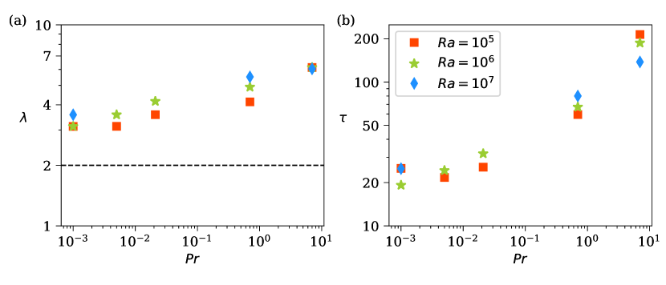
نحسب أطياف القدرة 1D للسرعة الرأسية ودرجة الحرارة وتدفق الحرارة الحملي، بعد متوسطتها كلها بالنسبة إلى الزاوية السمتية. وتُعطى وفق
| (28) | ||||
| (29) | ||||
| (30) |
حيث إن و هما، على الترتيب، تحويلا فورييه 2D لـ و. لاحظ أن الطيف يختلف عن طيف الطاقة المعرّف في § 5.2. ونجد أن الأطياف الثلاثة تُظهر قمة عند عدد موجة متقارب جداً الموافق لقيمة العظمى (انظر الشكل 13)، مما يعطي المقياس المكاني المميز للبنى الفائقة، مع .
وجد Pandey et al. (2018, 2021) أن المقياسين المميزين و لا يتفقان دائماً، ويكون التباين عادة أكبر عند أعداد برانتل المتوسطة والعالية. وهنا نستخرج المقياس المكاني للبنى الفائقة من طيف القدرة لتدفق الحرارة الحملي (انظر أيضاً Hartlep et al. (2003) وKrug et al. (2020)). وقد لوحظ في Pandey et al. (2018) أن دالة في ، وأن القيمة العظمى لـ وجدت عند من أجل . وفي المحاكيات الحالية (التي مُدِّد فيها مجال نزولاً إلى و بمقدار رتبتين)، تُرسم القيم المناظرة لـ بدلالة في الشكل 10(a) لكل محاكيات الجدول 1. ونجد أن يتناقص مع تناقص ، لكنها تبدو كأنها تستوي عند لأصغر أعداد برانتل 0.005 و0.001؛ انظر أيضاً الشكل 11 حيث تُعرض قيمة في مخطط خطوط الانسياب. ويبقى أن تُدرس كيفية نشوء هذا المقياس ابتداءً من بدء RBC حيث بصورة مستقلة عن (Chandrasekhar, 1981)، كما تشير إليه في الشكل 10(a) بخط أفقي متقطع. ونحيل أيضاً إلى الملحق C لمزيد من التفاصيل.
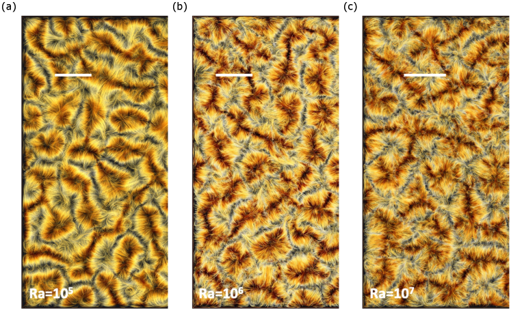
إن المقياس الزمني المميز () للبنى الفائقة طويل مقارنةً بالمقياس الزمني للتقلبات المضطربة. لذلك فإن متوسطة حقول السرعة أو درجة الحرارة زمنياً على فترة تعطي حقولاً خشنة الحبيبات تكاد تخلو من التقلبات صغيرة المقياس. وتتطور البنى واسعة المقياس الخشنة الحبيبات على مقاييس زمنية من رتبة (Pandey et al., 2018; Fonda et al., 2019)، وهي مرتبطة بالزمن اللازم لقطعة مائع كي تُكمل دورة. ويُحسب وفق
| (31) |
حيث إن الكمية في البسط هي محيط لفافات البنية الفائقة ذات المقطع العرضي الإهليلجي (Pandey et al., 2018). وينشأ عامل الثلاثة في التعبير أعلاه من أن زمن الدوران في جريان حمل ممتد ليس ثابتاً بل يُظهر توزيعاً عريضاً ذا أذيال أسية ممدودة في إطار المرجع اللاغرانجي على امتداد مسارات متتبعات عديمة الكتلة (Schneide et al., 2018; Vieweg et al., 2021b). ويُرسم المقياس المحسوب باستخدام التعبير (31) في الشكل 10(b) بدلالة . ونجد أن يزداد مع ، بما يتسق مع حقيقة أن عدد رينولدز، ومن ثم السرعة المميزة ، يتناقص مع ازدياد ، مما يتطلب زمناً أطول كي تُكمل قطع المائع دورة. ولاحظ أن في المعادلة (31) يزداد أيضاً مع ازدياد ، لكن الزيادة ليست بقدر أهمية النقصان في .
7 الخلاصات والمنظور المستقبلي
انصب تركيزنا هنا على حمل رايلي-بينار الحراري في طبقة ممتدة أفقياً لأعداد برانتل جزيئية صغيرة حتى ، وهي تتجاوز ما يمكن بلوغه في التجارب المخبرية المضبوطة وتقترب من الشروط الفلكية الفيزيائية. وقد وسعنا فضاء معلمات الأعمال السابقة لـ Pandey et al. (2018) وFonda et al. (2019) بواسطة المحاكاة العددية المباشرة، في اتجاه أدنى و أعلى معاً، وبذلك حددنا على نحو أكثر حسماً اعتمادات معلمية مختلفة مثل النقل الكلي للحرارة والزخم، وتقلبات درجة الحرارة، وكذلك معدلات التبدد الحركية والحرارية. ومن بين ما توفره هذه النتائج اختبار للتنبؤات القائمة لنظرية Grossmann & Lohse (2001) وStevens et al. (2013). وتبين المقارنات أن التنبؤات الخاصة بالنقل الكلي للحرارة والزخم بوصفها دالة في عدد برانتل عند عدد رايلي ثابت تتفق اتفاقاً مقبولاً.
وجدنا أيضاً أن عدد نوسلت يتناقص وفق ، في حين يزداد عدد رينولدز تقريباً وفق عندما يتناقص عدد برانتل من إلى 0.001 كما هو مفصل في الجدول 2. كما تتناقص معدلات تبدد الطاقة الحرارية والحركية المتوسطة اللابعدية مع ازدياد ، وتتسق سلوكيات تحجيمها مع تحجيم النقل الحراري الكلي. ودرسنا اعتماد هذه الكميات على العمق، ووجدنا أنه بسبب حقل درجة الحرارة شديد الانتشار في الحمل عند منخفض جداً، لا يختلط مائع القلب جيداً ويظهر تدرج رأسي ملحوظ لدرجة الحرارة في منطقة القلب، حتى عند أعلى عدد رايلي متاح.
دُرس اضطراب المائع عالي العطالية في قلب طبقة الحمل منخفضة- بفحص أطياف الطاقة الحركية، وقانون 4/5، وتساوي الخواص المحلي، واختبار الشذوذ التبددي. وتشير النتائج إلى أن اضطراب المائع في القلب عند أصغر عدد برانتل قريب من اضطراب كولموغوروف الكلاسيكي. وهذا يعني أن حقل درجة الحرارة يتصرف ككمية قياسية خاملة وشديدة الانتشار تُحرَّك بجريان شديد الاضطراب؛ ويمكن عد تأثير الأعمدة الحرارية، وهي شظايا غير مستقرة من الطبقات الحدية الحرارية السميكة، فرضاً واسع المقياس فعالاً للاضطراب، يهيمن في الجزء ذي أعداد الموجة الأصغر من المجال العطالي ( في الشكل 7). وتبقى بعض الاختلافات قائمة. وعلى وجه الخصوص، تقع القيمة المقاربة لمعدل تبدد الطاقة الحركية المتوسط المعاد تحجيمه دون نظيرتها في الاضطراب المتساوي الخواص (Sreenivasan, 1998)، مما يوحي بأن للطبقات الحدية أثراً مهماً رغم القرب من تساوي الخواص في المنطقة المركزية.
إن نتائج DNS لدينا محلولة بالكامل، ومن ثم يمكن أن تكون لها آثار في نمذجة الاضطراب صغير المقياس في دراسات المحاكاة ذات الشبكات الأخشن للحمل متوسط المقياس، ولا سيما في تطوير نماذج المقياس دون الشبكي التي تتجاوز نظرية طول الخلط لـ Prandtl (1925). ولا تزال هذه الفئة من نماذج الاضطراب الجبرية أداة أساسية في المحاكيات الفلكية الفيزيائية؛ انظر مثلاً مناقشات حدودها وامتداداتها في Miesch (2005) وKupka & Muthsam (2017)، أو الامتدادات الحديثة لدى Brandenburg (2016). وأخيراً، نؤكد أن الحمل المدروس هنا لا يتضمن تعقيدات مثل الدوران، أو المجال المغناطيسي، أو تغير معاملات النقل الجزيئية، أو الانحناء، وهي موجودة في الأوضاع الجيوفيزيائية والفلكية الفيزيائية. وسيلزم تضمينها للحصول على نماذج واقعية في هذه الحالات المحددة. وقد كان التركيز الحالي على استكشاف آثار أعداد برانتل المنخفضة، وهي سمة مهمة من سمات هذه الجريانات. وتجري حالياً دراسة أكثر تفصيلاً لهذه النقاط فيما يتصل بالتقطع صغير المقياس في جريانات RBC منخفضة عدد برانتل، وسيُبلغ عنها في موضع آخر.
[الشكر والتقدير]يعرب المؤلفون عن امتنانهم لـ Gauss Centre for Supercomputing e.V. (https://www.gauss-centre.eu) لتمويل هذا المشروع من خلال توفير وقت حوسبة على الحاسوب الفائق GCS Supercomputer SuperMUC-NG في Leibniz Supercomputing Centre (https://www.lrz.de).
[التمويل]A.P. يقر بالدعم المقدم من Deutsche Forschungsgemeinschaft (DFG) ضمن Priority Programme “Turbulent Superstructures” بموجب المنحة رقم DFG-SPP 1881. كما دُعم هذا العمل بالمنحة رقم SCHU 1410/30-1 من DFG وبمنحة معهد NYUAD رقم G1502 “NYUAD Center for Space Science.” ويحظى D.K. بدعم جزئي من المنحة رقم KR 4445/2-1 من DFG.
[إقرار المصالح]يفيد المؤلفون بعدم وجود تضارب في المصالح.
[بيان إتاحة البيانات]البيانات التي تدعم نتائج هذه الدراسة متاحة من المؤلف المراسل بناءً على طلب معقول.
[معرفات ORCID للمؤلفين]
A. Pandey, https://orcid.org/0000-0001-8232-6626;
D. Krasnov, https://orcid.org/0000-0002-8339-7749;
K.R. Sreenivasan, https://orcid.org/0000-0002-3943-6827;
J. Schumacher, https://orcid.org/0000-0002-1359-4536
Appendix A مقارنة حالّي العناصر الطيفية والفروق المنتهية
كما ذُكر في § 2، نستخدم حالّين مختلفين، أحدهما قائم على طريقة العناصر الطيفية (SEM) والآخر قائم على طريقة الفروق المنتهية (FDM)، لإجراء محاكياتنا بسبب المتطلبات الشديدة عند أعداد برانتل المنخفضة جداً. ومن ثم من المهم التأكد من أن كلا الحالّين يعطي النتائج نفسها. وللتحقق من ذلك أجرينا محاكيات مقارنة، من أجل و ومن أجل و. وفي الشكل 12 نرسم المقاطع الرأسية لتدفق الحرارة الحملي، ومعدلي التبدد الحراري والحركي للمقارنة الأولى. وتتفق المقاطع الناتجة عن حالّي العناصر الطيفية والفروق المنتهية جيداً جداً بعضها مع بعض. كما تتفق الكميات المتوسطة كلياً، مثل عددي نوسلت ورينولدز، اتفاقاً ممتازاً.
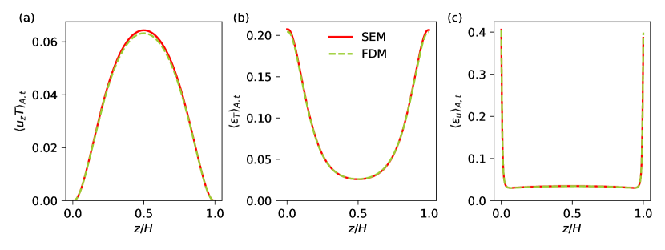
يمكن أيضاً تقدير التدفق الحراري الكلي باستخدام معدلات التبدد الكلية من العلاقات الدقيقة (Howard, 1972)، كما أن توافقها مؤشر على كفاية الدقة المكانية والزمنية (Pandey et al., 2021). وتعطي العلاقات الدقيقة أعداد نوسلت وفق
| (32) | |||||
| (33) |
إضافة إلى ذلك، يبقى التدفق الحراري في كل مستوى أفقي، انظر (9) في النص الرئيسي، ثابتاً عبر طبقة الحمل في الحالة المستقرة إحصائياً ويتطابق مع . ومن ثم نحسب التدفق الحراري المتوسط عند الصفيحتين العليا والسفلى وفق
| (34) |
ونسرده مع في الجدول 4. وتبين النتائج في الجدول أن الاتفاق بين جميع أعداد نوسلت المستحصلة بطرائق مختلفة ممتاز في كل المحاكيات.
بضع كلمات عن تحديد معدل تبدد الطاقة الحركية من نتائج حالّ FDM. فقد بُيّن في Viré & Knaepen (2009) أنه، بالنسبة إلى موتر معدل الانفعال ، لا تتحقق الهوية في الصيغة المتقطعة، وهو أمر ذو صلة خاصة بطرائق الفروق المنتهية والحجوم المنتهية. ويميل الحساب المباشر لـ إلى إعطاء قيم أقل من المتوقع، ولا سيما إذا كانت أخطاء التقطيع كبيرة. فعلى سبيل المثال، في حالة الشبكات الخشنة، وهي أنسب لـ LES مع ذلك، قد يؤدي الفرق بين الحساب المباشر لـ والجمع بالأجزاء إلى عامل يتراوح بين 2 و2.5 في منطقتي الحاجز والطبقة اللوغاريتمية (Viré et al., 2011). ومع أن هذا الفرق يتدرج وفق (حيث خطوة الشبكة) للتقريبات من الرتبة ، فإنه لا يمكن إهماله تماماً حتى في حالة الدقات الأدق المستخدمة في DNS. وهنا لا نستطيع تطبيق منهج الجمع بالأجزاء مباشرة، لأنه يتضمن ما يسمى متغيرات التدفق، المحددة عند واجهة الخلية (Viré et al., 2011). وتُستخدم متغيرات التدفق هذه في الخوارزمية لضمان شرط انعدام التباعد والصيغة المحافظة للحدود غير الخطية، لكنها لا تُخزَّن. وقد طبقنا نهجاً مختلفاً لنتائج FDM: يُحسب موتر باستخدام استنسلات دقيقة من الرتبة لتدرجات السرعة بغية تقليل أثر أخطاء التقطيع.
| No. of mesh cells | |||||||
| 0.001 | 5.4 | ||||||
| 0.005 | 60 | ||||||
| 0.005 | 3.5 | ||||||
| 0.021 | 156 | ||||||
| 0.7 | 1108 | ||||||
| 7 | 2670 | ||||||
| 0.001 | 2.0 | ||||||
| 0.005 | 6.3 | ||||||
| 0.021 | 6.0 | ||||||
| 0.7 | 1292 | ||||||
| 7 | 3255 | ||||||
| 0.001 | 1.0 | ||||||
| 0.7 | 248 | ||||||
| 0.7 | 10 | ||||||
| 7 | 471 |
Appendix B حساسية الشبكة لأكبر محاكاة لدينا
يصبح مقياس طول كولموغوروف في الجريان عند و صغيراً جداً، ومن ثم تصبح الموارد الحاسوبية المطلوبة للاستقصاء العددي لهذا الجريان باهظة للغاية. لذلك، ولتحديد العدد الأمثل من العقد اللازمة لحل الجريان على نحو كاف، أجرينا هذه المحاكاة على ثلاث شبكات مختلفة تضم و و خلية شبكية، ونشير إليها فيما يلي باسم mesh-1 وmesh-2 وmesh-3، على الترتيب. وكما لخص Scheel et al. (2013)، نقارن الكميات المتوسطة أفقياً وكذلك المتوسطة كلياً من هذه المحاكيات لاختبار آثار دقة الشبكة. وحقل معدل تبدد الطاقة الحركية ، الذي يتضمن حساب الحدود التسعة كلها لموتر تدرج السرعة، حساس جداً لحجم الشبكة في حمل منخفض-. حسبنا معدل تبدد الطاقة الحركية المتوسط أفقياً وفحصنا المنطقة القريبة من المستوى الأوسط حيث تكون الشبكة الحاسوبية أخشن ما تكون. ولاحظنا بيانات غير محلولة بما يكفي لـ mesh-1، في حين كان تغير أملس في المحاكيات ذات mesh-2 وmesh-3. وعلاوة على ذلك، يتفق من mesh-2 وmesh-3 جيداً جداً، ولا سيما أنهما يعطيان الفرق النسبي نفسه بين نتائج استنسلات الرتبتين و المطبقة للحساب المباشر لتدرجات السرعة. ويشير هذا التحليل بوضوح إلى أن mesh-2 قادر على التقاط مشتقات السرعة على نحو صحيح لهذه المعلمات القصوى. ومن ثم أجرينا محاكاتنا من أجل و باستخدام mesh-2.
Appendix C تقدير الأطوال والأزمنة المميزة للبنى الفائقة
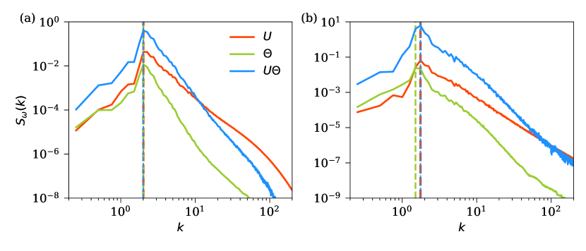
نعرض أطياف القدرة و من أجل عند و في الشكل 13، ونجد أن التوزيعات الطيفية لحقلي السرعة ودرجة الحرارة مختلفة. ويبين الشكل 13 أن القدرة تزداد أولاً مع تناقص مقاييس الطول وتبلغ قيمة عظمى قبل أن تهبط بحدة مع مزيد من التناقص في حجم المقياس. ونجد أن اضمحلال طيف التباين الحراري بعد سريع مقارنةً باضمحلال مربع مركبة السرعة الرأسية. ويرجع ذلك إلى أن حقل السرعة في الحمل منخفض- جداً مضطرب بقوة ويمتلك إسهامات دقيقة المقياس أكبر مقارنةً بالطبيعة واسعة المقياس غالباً لحقل درجة الحرارة (Schumacher et al., 2015). ومع ذلك نجد أن الأطياف الثلاثة تظهر قمة عند عدد موجة متقارب جداً يوافق القيمة العظمى لـ ، مما يعطي المقياس المكاني المميز للبنى الفائقة، مع .
وعلاوة على ذلك، لا يبقى المقياس المكاني ثابتاً بل يتقلب أثناء تطور الجريان. ويمكن رؤية ذلك في الشكل 14، حيث نرسم ، المستخرج من كل لقطة لحظية من محاكياتنا، بدلالة الزمن.
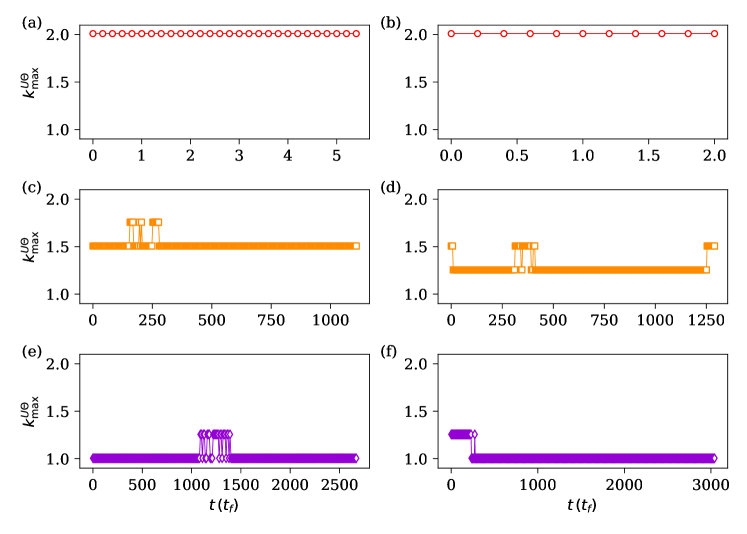
يبين الشكل أن مستقل عن الزمن طوال مدة المحاكيات عند . وتنطبق الملاحظة نفسها أيضاً على محاكيات و (غير المعروضة في الشكل). غير أن في المحاكيات عند و، رغم بقائه ثابتاً معظم الوقت، يُظهر ارتحالات عرضية. ومن ثم نحدد المقياس المكاني المميز للبنى الفائقة بأخذ المتوسط الزمني لـ وإيجاد .
References
- Ahlers et al. (2009) Ahlers, G., Grossmann, S. & Lohse, D. 2009 Heat transfer and large scale dynamics in turbulent Rayleigh-Bénard convection. Rev. Mod. Phys. 81, 503–537.
- Aurnou et al. (2015) Aurnou, J., Calkins, M., Cheng, J., Julien, K., King, E., Nieves, D., Soderlund, K. & Stellmach, S. 2015 Rotating convective turbulence in Earth and planetary cores. Phys. Earth Planet. Inter. 246, 52–71.
- Bailon-Cuba et al. (2010) Bailon-Cuba, J., Emran, M. S. & Schumacher, J. 2010 Aspect ratio dependence of heat transfer and large-scale flow in turbulent convection. J. Fluid Mech. 655, 152–173.
- Bhattacharya et al. (2021) Bhattacharya, S., Verma, M. K. & Samtaney, R. 2021 Prandtl number dependence of the small-scale properties in turbulent Rayleigh-Bénard convection. Phys. Rev. Fluids 6, 063501.
- Bolgiano (1959) Bolgiano, R. 1959 Turbulent spectra in a stably stratified atmosphere. J. Geophys. Res. 64, 2226.
- Brandenburg (2016) Brandenburg, A. 2016 Stellar mixing length theory with entropy rain. Astrophys. J. 832 (1), 6.
- Brandenburg & Subramanian (2005) Brandenburg, A. & Subramanian, K. 2005 Astrophysical magnetic fields and nonlinear dynamo theory. Phys. Rep. 417, 1–209.
- Breuer et al. (2004) Breuer, M., Wessling, S., Schmalzl, J. & Hansen, U. 2004 Effect of inertia in Rayleigh-Bénard convection. Phys. Rev. E 69, 026302.
- Calkins et al. (2012) Calkins, M. A., Aurnou, J. M., Eldredge, J. D. & Julien, K. 2012 The influence of fluid properties on the morphology of core turbulence and the geomagnetic field. Earth Planet. Sci. Lett. 359, 55–60.
- Cattaneo et al. (2001) Cattaneo, F., Lenz, D. & Weiss, N. 2001 On the origin of the solar mesogranulation. Astrophys. J. 563 (1), L91–L94.
- Chandrasekhar (1981) Chandrasekhar, S. 1981 Hydrodynamic and Hydromagnetic Stability. New York: Dover.
- Chillà & Schumacher (2012) Chillà, F. & Schumacher, J. 2012 New perspectives in turbulent Rayleigh-Bénard convection. Eur. Phys. J. E 35, 58.
- Cioni et al. (1997) Cioni, S., Ciliberto, S. & Sommeria, J. 1997 Strongly turbulent Rayleigh-Bénard convection in mercury: comparison with results at moderate Prandtl number. J. Fluid Mech. 335, 111–140.
- David & Galtier (2021) David, V. & Galtier, S. 2021 Proof of the zeroth law of turbulence in one-dimensional compressible magnetohydrodynamics and shock heating. Phys. Rev. E 103, 063217.
- Emran & Schumacher (2008) Emran, M. S. & Schumacher, J. 2008 Fine-scale statistics of temperature and its derivatives in convective turbulence. J. Fluid Mech. 611, 13.
- Emran & Schumacher (2015) Emran, M. S. & Schumacher, J. 2015 Large-scale mean patterns in turbulent convection. J. Fluid Mech. 776, 96–108.
- Eyink (1994) Eyink, G. L. 1994 Energy dissipation without viscosity in ideal hydrodynamics I. Fourier analysis and local energy transfer. Physica D: Nonlinear Phenomena 78 (3), 222–240.
- Fischer (1997) Fischer, P. F. 1997 An overlapping Schwarz method for spectral element solution of the incompressible Navier-Stokes equations. J. Comp. Phys. 133 (1), 84–101.
- Fonda et al. (2019) Fonda, E., Pandey, A., Schumacher, J. & Sreenivasan, K. R. 2019 Deep learning in turbulent convection networks. Proc. Natl. Acad. Sci. USA 116 (18), 8667–8672.
- Frisch (1995) Frisch, U. 1995 Turbulence: The Legacy of A. N. Kolmogorov. Cambridge: Cambridge University Press.
- Garaud (2021) Garaud, P. 2021 Journey to the center of stars: The realm of low Prandtl number fluid dynamics. Phys. Rev. Fluids 6, 030501.
- Green et al. (2020) Green, G., Vlaykov, D. G., Mellado, J. P. & Wilczek, M. 2020 Resolved energy budget of superstructures in Rayleigh–Bénard convection. J. Fluid Mech. 887, A21.
- Grossmann & Lohse (2000) Grossmann, S. & Lohse, D. 2000 Scaling in thermal convection: a unifying theory. J. Fluid Mech. 407, 27–56.
- Grossmann & Lohse (2001) Grossmann, S. & Lohse, D. 2001 Thermal convection for large Prandtl numbers. Phys. Rev. Lett. 86, 3316.
- Guervilly et al. (2019) Guervilly, C., Cardin, P. & Schaeffer, N. 2019 Turbulent convective length scale in planetary cores. Nature 570, 368–371.
- Hartlep et al. (2003) Hartlep, T., Tilgner, A. & Busse, F. H. 2003 Large scale structures in Rayleigh-Bénard convection at high Rayleigh numbers. Phys. Rev. Lett. 91, 064501.
- Hartlep et al. (2005) Hartlep, T., Tilgner, A. & Busse, F. H. 2005 Transition to turbulent convection in a fluid layer heated from below at moderate aspect ratio. J. Fluid Mech. 544, 309–322.
- Horanyi et al. (1999) Horanyi, S., Krebs, L. & Müller, U. 1999 Turbulent Rayleigh–Bénard convection in low Prandtl–number fluids. Int. J. Heat Mass Transfer 42 (21), 3983–4003.
- Howard (1972) Howard, L. N. 1972 Bounds on flow quantities. Annu. Rev. Fluid Mech. 4 (1), 473–494, arXiv: https://doi.org/10.1146/annurev.fl.04.010172.002353.
- Ishihara et al. (2009) Ishihara, T., Gotoh, T. & Kaneda, Y. 2009 Study of high-Reynolds number isotropic turbulence by direct numerical simulation. Annu. Rev. Fluid Mech. 41, 165–180.
- Kadanoff (2001) Kadanoff, L. P. 2001 Turbulent heat flow: Structures and scaling. Phys. Today 54, 34–39.
- Käpylä (2021) Käpylä, P. J. 2021 Prandtl number dependence of stellar convection: Flow statistics and convective energy transport. A&A 655, A78.
- Kolmogorov (1941a) Kolmogorov, A. N. 1941a Dissipation of energy in locally isotropic turbulence. Dokl. Akad. Nauk SSSR 32, 16–18.
- Kolmogorov (1941b) Kolmogorov, A. N. 1941b The local structure of turbulence in incompressible viscous fluid for very large Reynolds numbers. Dokl. Akad. Nauk SSSR 30, 301–305.
- Krasnov et al. (2011) Krasnov, D., Zikanov, O. & Boeck, T. 2011 Comparative study of finite difference approaches in simulation of magnetohydrodynamic turbulence at low magnetic Reynolds number. Comput. Fluids 50 (1), 46–59.
- Krug et al. (2020) Krug, D., Lohse, D. & Stevens, R. J. A. M. 2020 Coherence of temperature and velocity superstructures in turbulent Rayleigh–Bénard flow. J. Fluid Mech. 887, A2.
- Kupka & Muthsam (2017) Kupka, F. & Muthsam, H. J. 2017 Modelling of stellar convection. Living Rev. Comput. Astrophys. 3, 1.
- Lenzi et al. (2021) Lenzi, S., von Hardenberg, J. & Provenzale, A. 2021 Scale of plume clustering in large-Prandtl-number convection. Phys. Rev. E 103, 053103.
- Liu et al. (2018) Liu, W., Krasnov, D. & Schumacher, J. 2018 Wall modes in magnetoconvection at high Hartmann numbers. J. Fluid Mech. 849, R2.
- Lohse & Xia (2010) Lohse, D. & Xia, K.-Q. 2010 Small-scale properties of turbulent Rayleigh-Bénard convection. Annu. Rev. Fluid Mech. 42, 335–364.
- Miesch (2005) Miesch, M. S. 2005 Large-scale dynamics of the convective zone and tachocline. Living Rev. Solar Phys. 2, 1.
- Mishra & Verma (2010) Mishra, P. K. & Verma, M. K. 2010 Energy spectra and fluxes for Rayleigh-Bénard convection. Phys. Rev. E 81, 056316.
- Moller et al. (2022) Moller, S., Käufer, T., Pandey, A., Schumacher, J. & Cierpka, C. 2022 Combined particle image velocimetry and thermometry of turbulent superstructures in thermal convection. J. Fluid Mech., in press .
- Monin & Yaglom (2007) Monin, A. S. & Yaglom, A. M. 2007 Statistical Fluid Mechanics. Mineola, NY: Dover Publications Inc.
- Nath et al. (2016) Nath, D., Pandey, A., Kumar, A. & Verma, M. K. 2016 Near isotropic behavior of turbulent thermal convection. Phys. Rev. Fluids 1, 064302.
- Nordlund et al. (2009) Nordlund, A., Stein, R. & Asplund, M. 2009 Solar surface convection. Living Rev. Sol. Phys. 6, 2.
- Pandey (2021) Pandey, A. 2021 Thermal boundary layer structure in low-Prandtl-number turbulent convection. J. Fluid Mech. 910, A13.
- Pandey et al. (2018) Pandey, A., Scheel, J. D. & Schumacher, J. 2018 Turbulent superstructures in Rayleigh-Bénard convection. Nat. Commun. 9, 2118.
- Pandey et al. (2021) Pandey, A., Schumacher, J. & Sreenivasan, K. R. 2021 Non-Boussinesq low-Prandtl-number convection with a temperature-dependent thermal diffusivity. Astrophys. J. 907 (1), 56.
- Pandey & Sreenivasan (2021) Pandey, A. & Sreenivasan, K. R. 2021 Convective heat transport in slender cells is close to that in wider cells at high Rayleigh and Prandtl numbers. Europhys. Lett. 135 (2), 24001.
- Pandey & Verma (2016) Pandey, A. & Verma, M. K. 2016 Scaling of large-scale quantities in Rayleigh-Bénard convection. Phys. Fluids 28 (9), 095105.
- Peltier et al. (1996) Peltier, L. J., Wyngaard, J. C., Khanna, S. & Brasseur, J. O. 1996 Spectra in the unstable surface layer. J. Atmos. Sci. 53 (1), 49 – 61.
- Prandtl (1925) Prandtl, L. 1925 Bericht über Untersuchungen zur ausgebildeten Turbulenz. Z. Angew. Math. Mech. 5, 136–139.
- Rincon et al. (2005) Rincon, F., Lignières, F. & Rieutord, M. 2005 Mesoscale flows in large aspect ratio simulations of turbulent compressible convection. A&A 430 (3), L57–L60.
- Rincon & Rieutord (2018) Rincon, F. & Rieutord, M. 2018 The Sun’s supergranulation. Living Rev. Sol. Phys. 15, 6.
- Scheel et al. (2013) Scheel, J. D., Emran, M. S. & Schumacher, J. 2013 Resolving the fine-scale structure in turbulent Rayleigh-Bénard convection. New J. Phys. 15, 113063.
- Scheel et al. (2012) Scheel, J. D., Kim, E. & White, K. R. 2012 Thermal and viscous boundary layers in turbulent Rayleigh–Bénard convection. J. Fluid Mech. 711, 281–305.
- Scheel & Schumacher (2014) Scheel, J. D. & Schumacher, J. 2014 Local boundary layer scales in turbulent Rayleigh–Bénard convection. J. Fluid Mech. 758, 344–373.
- Scheel & Schumacher (2016) Scheel, J. D. & Schumacher, J. 2016 Global and local statistics in turbulent convection at low Prandtl numbers. J. Fluid Mech. 802, 147–173.
- Scheel & Schumacher (2017) Scheel, J. D. & Schumacher, J. 2017 Predicting transition ranges to fully turbulent viscous boundary layers in low Prandtl number convection flows. Phys. Rev. Fluids 2, 123501.
- Schindler et al. (2022) Schindler, F., Eckert, S., Zürner, T., Schumacher, J. & Vogt, T. 2022 Collapse of coherent large scale flow in strongly turbulent liquid metal convection. Phys. Rev. Lett. 128, 164501.
- Schmalzl et al. (2004) Schmalzl, J., Breuer, M. & Hansen, U. 2004 On the validity of two-dimensional numerical approaches to time-dependent thermal convection. Europhys. Lett. 67, 390–396.
- Schneide et al. (2018) Schneide, C., Pandey, A., Padberg-Gehle, K. & Schumacher, J. 2018 Probing turbulent superstructures in Rayleigh-Bénard convection by Lagrangian trajectory clusters. Phys. Rev. Fluids 3, 113501.
- Schumacher et al. (2016) Schumacher, J., Bandaru, V., Pandey, A. & Scheel, J. D. 2016 Transitional boundary layers in low-Prandtl-number convection. Phys. Rev. Fluids 1, 084402.
- Schumacher et al. (2015) Schumacher, J., Götzfried, P. & Scheel, J. D. 2015 Enhanced enstrophy generation for turbulent convection in low-Prandtl-number fluids. Proc. Natl. Acad. Sci. USA 112, 9530–9535.
- Schumacher & Sreenivasan (2020) Schumacher, J. & Sreenivasan, K. R. 2020 Colloquium: Unusual dynamics of convection in the Sun. Rev. Mod. Phys. 92, 041001.
- Shraiman & Siggia (1990) Shraiman, B. I. & Siggia, E. D. 1990 Heat transport in high-Rayleigh-number convection. Phys. Rev. A 42, 3650–3653.
- Siggia (1994) Siggia, E. D. 1994 High Rayleigh number convection. Annu. Rev. Fluid Mech. 26, 137.
- Sreenivasan (1984) Sreenivasan, K. R. 1984 On the scaling of the turbulence energy dissipation rate. Phys. Fluids 27, 1048–1051.
- Sreenivasan (1995) Sreenivasan, K. R. 1995 On the universality of the Kolmogorov constant. Phys. Fluids 7 (11), 2778–2784.
- Sreenivasan (1998) Sreenivasan, K. R. 1998 An update on the energy dissipation rate in isotropic turbulence. Phys. Fluids 10 (2), 528–529.
- Sreenivasan & Schumacher (2010) Sreenivasan, K. R. & Schumacher, J. 2010 Lagrangian views on turbulent mixing of passive scalars. Phil. Trans. R. Soc. A 368, 1561–1577.
- Stevens et al. (2011) Stevens, R., Lohse, D. & Verzicco, R. 2011 Prandtl and Rayleigh number dependence of heat transport in high Rayleigh number thermal convection. J. Fluid Mech. 688, 31–43.
- Stevens et al. (2018) Stevens, R. J. A. M., Blass, A., Zhu, X., Verzicco, R. & Lohse, D. 2018 Turbulent thermal superstructures in Rayleigh-Bénard convection. Phys. Rev. Fluids 3, 041501.
- Stevens et al. (2013) Stevens, R. J. A. M., van der Poel, E. P., Grossmann, S. & Lohse, D. 2013 The unifying theory of scaling in thermal convection: the updated prefactors. J. Fluid Mech. 730, 295–308.
- Tritton (1977) Tritton, D. J. 1977 Physical Fluid Dynamics. Dordrecht: Springer Netherlands.
- van der Poel et al. (2013) van der Poel, E. P., Stevens, R. J. A. M. & Lohse, D. 2013 Comparison between two- and three-dimensional Rayleigh-Bénard convection. J. Fluid Mech. 736, 177–194.
- Verma (2018) Verma, M. K. 2018 Physics of Buoyant Flows. Singapore: World Scientific.
- Verma et al. (2017) Verma, M. K., Kumar, A. & Pandey, A. 2017 Phenomenology of buoyancy-driven turbulence: recent results. New J. Phys. 19 (2), 025012.
- Verzicco & Camussi (1999) Verzicco, R. & Camussi, R. 1999 Prandtl number effects in convective turbulence. J. Fluid Mech. 383, 55–73.
- Vieweg et al. (2021a) Vieweg, P. P., Scheel, J. D. & Schumacher, J. 2021a Supergranule aggregation for constant heat flux-driven turbulent convection. Phys. Rev. Research 3, 013231.
- Vieweg et al. (2021b) Vieweg, P. P., Schneide, C., Padberg-Gehle, K. & Schumacher, J. 2021b Lagrangian heat teat transport in turbulent three-dimensional convection. Phys. Rev. Fluids 6, L041501.
- Viré & Knaepen (2009) Viré, A. & Knaepen, B. 2009 On discretization errors and subgrid scale model implementations in Large Eddy Simulations. J. Comp. Phys. 228, 8203–8213.
- Viré et al. (2011) Viré, A., Krasnov, D., Boeck, T. & Knaepen, B. 2011 Modeling and discretization errors in Large Eddy Simulations of hydrodynamic and magnetohydrodynamic channel flow. J. Comp. Phys. 230, 1903–1922.
- von Hardenberg et al. (2008) von Hardenberg, J., Parodi, A., Passoni, G., Provenzale, A. & Spiegel, E. 2008 Large-scale patterns in Rayleigh-Bénard convection. Phys. Lett. A 372 (13), 2223–2229.
- Vorobev et al. (2005) Vorobev, A., Zikanov, O., Davidson, P. A. & Knaepen, B. 2005 Anisotropy of magnetohydrodynamic turbulence at low magnetic Reynolds number. Phys. Fluids 17 (12), 125105, arXiv: https://doi.org/10.1063/1.2140847.
- Yakhot (1992) Yakhot, V. 1992 4/5 Kolmogorov law for statistically stationary turbulence: Application to high-Rayleigh-number Bénard convection. Phys. Rev. Lett. 69, 769–771.
- Yeung & Zhou (1997) Yeung, P. K. & Zhou, Y. 1997 Universality of the Kolmogorov constant in numerical simulations of turbulence. Phys. Rev. E 56, 1746–1752.
- Zürner et al. (2019) Zürner, T., Schindler, F., Vogt, T., Eckert, S. & Schumacher, J. 2019 Combined measurement of velocity and temperature in liquid metal convection. J. Fluid Mech. 876, 1108–1128.
- Zwirner et al. (2020) Zwirner, L., Khalilov, R., Kolesnichenko, I., Mamykin, A., Mandrykin, S., Pavlinov, A., Shestakov, A., Teimurazov, A., Frick, P., Shishkina, O. & et al. 2020 The influence of the cell inclination on the heat transport and large-scale circulation in liquid metal convection. J. Fluid Mech. 884, A18.